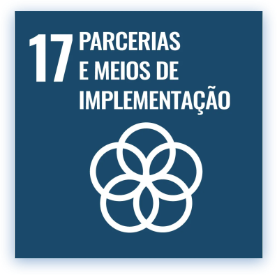
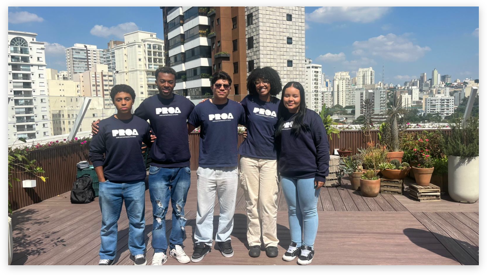

.svg)
QUEM SOMOS
Acessibilidade
não é um detalhe.
Somos uma plataforma que ajuda empresas a diagnosticar, entender e transformar seus espaços e serviços — para que nenhuma pessoa fique de fora.
QUEM SOMOS
Somos uma plataforma que ajuda empresas a diagnosticar, entender e transformar seus espaços e serviços — para que nenhuma pessoa fique de fora.
A intergra+ surgiu de uma percepção simples: a maioria das empresas quer ser acessível, mas não sabe por onde começar. Diagnósticos superficiais e checklists genéricos não transformam realidades.
Criamos uma plataforma que analisa espaços e serviços e promove experiências imersivas, ajudando equipes a compreender na prática as barreiras da acessibilidade.

Melhorar a acessibilidade, ajudando empresas a se tornarem mais inclusivas, seguras e alinhadas às normas legais, garantindo uma melhor experiência para todos os clientes e funcionários.

Promover uma cultura em que a acessibilidade seja vista não como obrigação, mas como valor essencial.

- Acessibilidade
- Inclusão
- Empatia
- Respeito
- Diversidade
- Inovação
IMPACTO REAL
DA POPULAÇÃO MUNDIAL VIVE COM ALGUM TIPO DE DEFICIÊNCIA
EMPRESA MAPEADAS E ORIENTADAS PELA PLATAFORMA
MAIS RETENÇÃO EM EMPRESAS VERDADEIRAMENTE INCLUSAS
QUE FAZEMOS
Nossa atuação combina tecnologia, empatia e metodologia para gerar mudança real — não apenas conformidade.
Mapeamos espaços físicos e serviços digitais com metodologia própria, identificando barreiras reais e entregando um plano de ação priorizado.
Simulações e vivências práticas que colocam gestores e equipes no lugar de usuários com deficiência — criando empatia real, não teórica.
Conteúdos, guias e ferramentas para que qualquer pessoa ou empresa possa entender acessibilidade de forma clara, prática e aplicável.


EQUIPE INTEGRA+